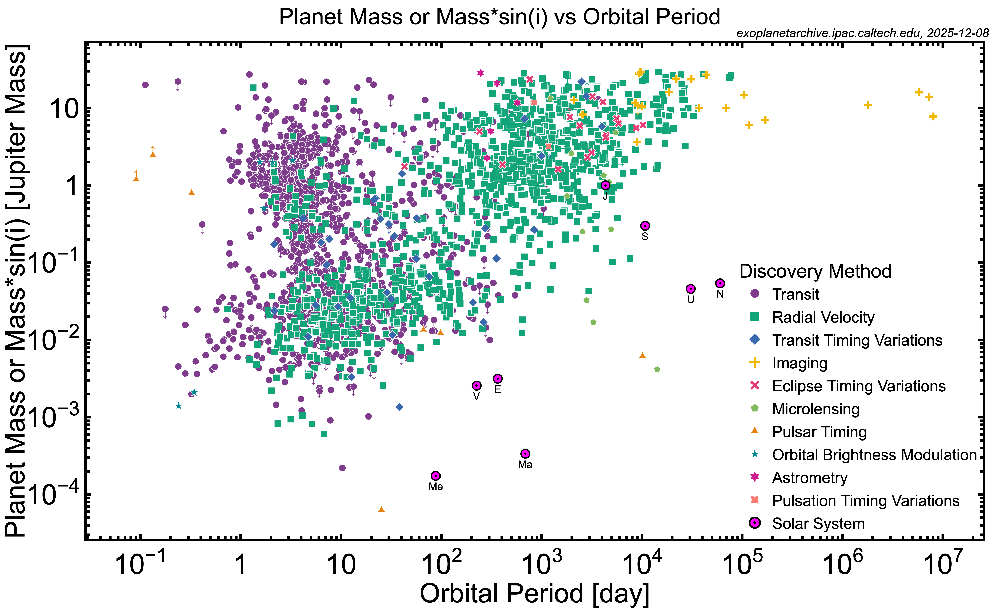
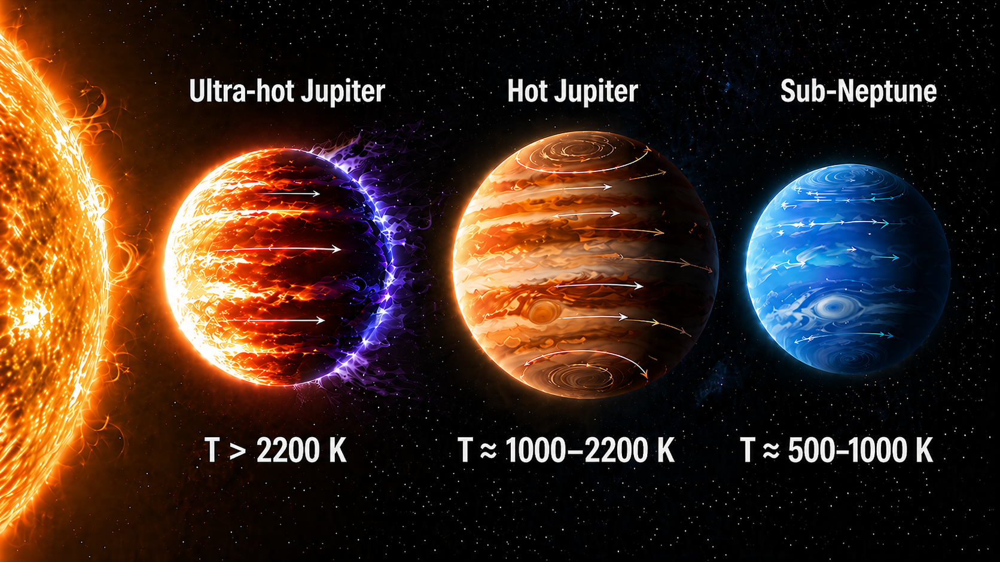
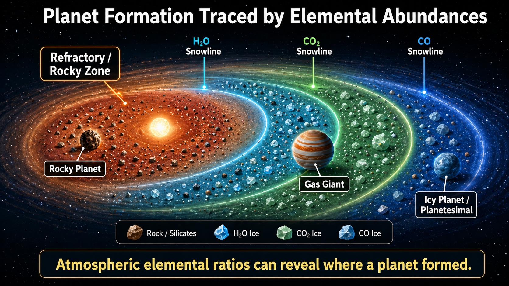
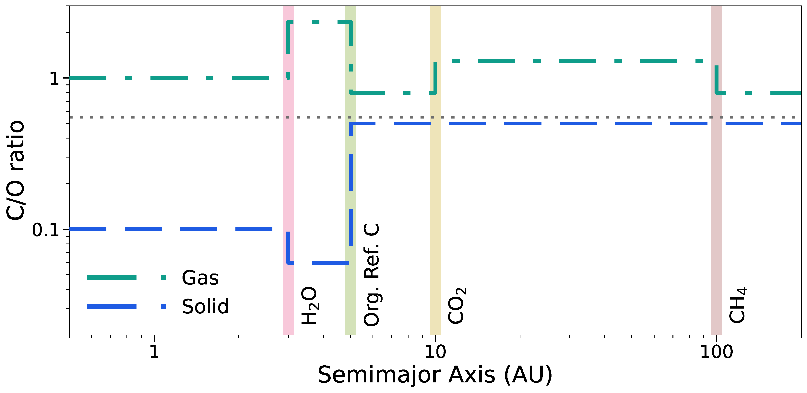

Ph.D. in Physics
2022 – 2026
Department of Physics
Ludwig-Maximilians-Universität München, Bavaria, Germany
Graduate Student at Ludwig-Maximilians-Universität München, Germany
I work on
I work at the intersection of physics, chemistry, and statistics to interpret exoplanet observations through theoretical simulations. My research focuses on understanding how atmospheric spectra can reveal the physical and chemical nature of planets, and how those atmospheric signatures connect to broader questions of planet formation and evolution.
My work has primarily focused on gas giants and sub-Neptunes, studied using both high-resolution and low-resolution spectroscopy. By combining radiative transfer, atmospheric chemistry, and Bayesian retrieval techniques, I investigate how observed spectra can be translated into robust constraints on atmospheric composition and structure. The main focus of my research has been to understand the elemental inventory of planetary atmospheres and how those elements may be preserved, transformed, or altered from the time of formation. atmospheric abundances and elemental ratios can serve as tracers of origin, migration, and long-term chemical processing. In this way, I aim to connect observations with theory to better understand the diversity of planetary atmospheres and the physical processes that shape them.
During my undergraduate studies, I received several recognitions, including the KVPY Fellowship, awarded by the Ministry of Education and the Department of Science and Technology (DST), Government of India; the Indian Academy of Sciences Summer Research Fellowship; and an iGEM Gold Medal as an advisor to the IISER Kolkata mathematical modeling team in 2021.
Outside academia, I enjoy landscape and street photography, travelling to mountains, and playing football, cricket, and badminton. I am a die-hard supporter of Argentina and FC Barcelona football team.
2022 – 2026
Department of Physics
Ludwig-Maximilians-Universität München, Bavaria, Germany
2017 – 2022
Department of Physical Sciences
Indian Institute of Science Education and Research (IISER) Kolkata, West Bengal, India
More than 6,000 exoplanets have now been discovered, and the field has reached a stage where the emphasis is no longer only on detection, but on the physical and chemical characterization of planetary atmospheres. A major challenge in contemporary exoplanet science is to understand how atmospheric composition varies across planetary classes and irradiation regimes, and to determine how much of a planet’s present-day atmosphere still retains information about its formation history, volatile delivery, and subsequent evolution.

I work at the intersection of radiative transfer, atmospheric chemistry, and atmospheric retrieval to connect observed spectra with the underlying physical and chemical properties of exoplanet atmospheres. My research is focused particularly on gas giants and sub-Neptunes, which provide some of the best laboratories for studying atmospheric chemistry under different irradiation environments. These planets are observable across both low-resolution and high-resolution spectroscopy, making them especially valuable for linking atmospheric signatures to planetary physics.

A major theme of my work is carbon chemistry. I am interested in how carbon-bearing species behave across strongly irradiated and chemically diverse atmospheres, from simple molecules to larger hydrocarbons, and in how those species respond to temperature, atmospheric transport, irradiation, and disequilibrium processes. More broadly, I seek to understand when atmospheric abundances and elemental ratios can be interpreted not merely as fitting parameters, but as physically meaningful quantities that retain information about a planet’s origin and chemical evolution.
That question naturally leads back to the protoplanetary disk, where planetary volatile inventories are first established. The chemical environment of the disk is not uniform: condensation fronts, radial drift, and the partitioning of elements between gas and solids all shape the material available to forming planets. As a result, the chemistry of a mature planetary atmosphere may still preserve traces of where the planet formed, what material it accreted, and how it migrated through the disk.

One of the most useful ways to formalize this connection is through elemental ratios, particularly ratios such as C/O, which encode how carbon- and oxygen-bearing material is distributed between gas and solids at different disk locations. Because the balance between gas-phase species and condensed material changes with distance from the star, these ratios provide a physically motivated framework for linking atmospheric abundances to formation environment. When interpreted carefully, they offer a bridge between observed spectra and the chemical architecture of planet formation.

My research is motivated by making these links quantitative. I use atmospheric modeling and retrieval-based inference to constrain elemental abundances and their ratios, thermal structure, and cloud properties, and to investigate how robustly these quantities can be interpreted for individual planets as well as across planetary populations. In this context, I am particularly interested in how carbon-bearing chemistry, elemental ratios, and comparative atmospheric studies can be used to connect exoplanet spectra to broader questions of planet formation, migration, and chemical processing. For a more detailed overview of these projects and results, please refer to the Publications section.
The Astrophysical Journal Supplement Series 278(1), 19 (2025)
View in JournalThe Planetary Science Journal 6(1), 4 (2025)
View in JournalThe Astrophysical Journal 972(2), 165 (2024)
View in JournalAstronomy & Astrophysics 678, A53 (2023)
View in JournalMNRAS 536(2), 1555–1578 (2025)
View in JournalMNRAS 536(1), 324–339 (2025)
View in JournalRAS Techniques and Instruments 3(1), 636–690 (2024) (K. L. Chubb et al., including Dubey, D.)
View in Journal
Universitäts-Sternwarte München
Scheinerstraße 1
81679 München